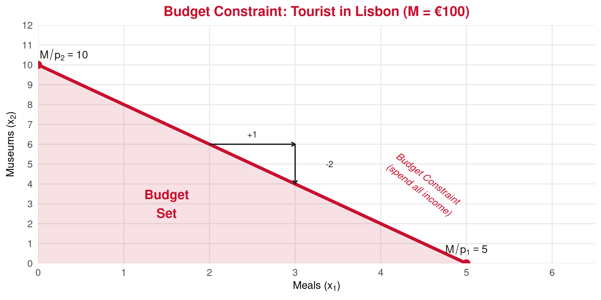

Consumer Theory
Lecture 5: Budget Set and Budget Constraint
2026
Recap: Fundamentals Block ⏪
What we covered in Lectures 1–4:
- Scarcity forces choices ➡️ trade-offs everywhere
- Economic Systems: Market, Centralized, Mixed
- Opportunity Cost = accounting cost + surplus of the best alternative
- PPF: Visualizes society’s production trade-offs and efficiency
Today: We zoom in from society to the individual consumer
👉 How does a single person decide what to buy?
Welcome to Consumer Theory 🛒
The Big Question: Given limited income and market prices, what can a consumer afford?
Lectures 5–9 Roadmap:
- 👉 Budget Set & Constraint (today)
- Preferences & Rationality Axioms
- MRS, Utility & Maximization
- Individual & Market Demand
- Demand Elasticity
Why it matters for tourism ✈️
Tourists are consumers! Understanding budget constraints explains:
- Why some choose hostels, others choose resorts
- How exchange rates affect travel decisions
The Consumer’s Problem
Starting Point: What Can You Afford? 💸
Every consumer faces three constraints:
💰 Income (\(M\))
The total money available to spend
🏷️ Price of Good 1 (\(p_1\))
How much each unit of good 1 costs
🏷️ Price of Good 2 (\(p_2\))
How much each unit of good 2 costs
The Consumer’s Problem
Given income \(M\) and prices \(p_1\), \(p_2\), what combinations of goods 1 and 2 can the consumer purchase?
A Tourism Example 🌴
Scenario: A tourist arrives in Lisbon with a daily budget of €100.
Two “goods” to spend on:
- 🍴 Meals at restaurants: €20 each
- 🎫 Museum tickets: €10 each
Question: What combinations of meals and museum visits can this tourist afford?
| Meals (\(x_1\)) | Museums (\(x_2\)) | Total Spent |
|---|---|---|
| 0 | 10 | €100 |
| 1 | 8 | €100 |
| 2 | 6 | €100 |
| 3 | 4 | €100 |
| 5 | 0 | €100 |
The Budget Constraint Equation 📏
The consumer spends all income on two goods:
\[\underbrace{p_1 \cdot x_1 + p_2 \cdot x_2}_{Expenditure} = \underbrace{M}_{Budget}\]
From our example: €20 \(\cdot x_1\) + €10 \(\cdot x_2\) = €100
Solving for \(x_2\) (to graph it):
\[x_2 = \frac{M}{p_2} - \frac{p_1}{p_2} \cdot x_1\]
\[x_2 = \frac{100}{10} - \frac{20}{10} \cdot x_1 = 10 - 2x_1\]
Graphing the Budget Constraint 📉
Key Elements of the Budget Constraint
Intercepts (maximum of each good):
Vertical (\(x_1 = 0\)): \(\frac{M}{p_2} = \frac{100}{10} = 10\) museums
Horizontal (\(x_2 = 0\)): \(\frac{M}{p_1} = \frac{100}{20} = 5\) meals
Slope of the budget line:
\[\text{Slope} = -\frac{p_1}{p_2} = -\frac{20}{10} = -2\]
👉 For every 1 extra meal, the tourist gives up 2 museum visits
This is the economic rate of substitution set by the market! Also known as the opportunity cost of an extra meal!
Budget Set vs Budget Line 🗺️
Budget Line vs Budget Set
Budget Line All bundles where the consumer spends exactly all income: \(p_1 x_1 + p_2 x_2 = M\)
Budget Set All affordable bundles (spend all or less): \(p_1 x_1 + p_2 x_2 \leq M\)
The budget set is the shaded area including the line itself.
Bundles above the budget line are unaffordable ❌
Bundles on the budget line: spend all income ✅
Bundles inside the budget set: affordable with money left over ✅
What Shifts the Budget Constraint?
Change in Income 📈
What happens if our tourist’s budget increases from €100 to €150?

👉 Income change: parallel shift (slope unchanged at \(-p_1/p_2\))
Change in Price of Good 1 🏷️
What if meal prices drop from €20 to €10?

👉 Price change of one good: pivot around the other intercept (slope changes!)
Summary: What Shifts What? 📝
| Change | Effect on Budget Line | Slope | Intercepts |
|---|---|---|---|
| ⬆️ Income (\(M\)) | Parallel shift outward | Same | Both increase |
| ⬇️ Income (\(M\)) | Parallel shift inward | Same | Both decrease |
| ⬇️ Price \(p_1\) | Pivot outward on \(x_1\) axis | Flatter | \(x_1\)-intercept increases |
| ⬆️ Price \(p_1\) | Pivot inward on \(x_1\) axis | Steeper | \(x_1\)-intercept decreases |
| ⬇️ Price \(p_2\) | Pivot outward on \(x_2\) axis | Steeper | \(x_2\)-intercept increases |
| ⬆️ Price \(p_2\) | Pivot inward on \(x_2\) axis | Flatter | \(x_2\)-intercept decreases |
💡 Key insight: The slope \(-p_1/p_2\) is the relative price — what the market says one good costs in terms of the other.
The Slope as Opportunity Cost ⚖️
The slope of the budget constraint has a direct economic interpretation:
\[\text{Slope} = -\frac{p_1}{p_2}\]
This tells us the market’s exchange rate between the two goods.
Our example: \(-20/10 = -2\)
For 1 extra meal, you must give up 2 museum visits.
This is not a preference — it is a constraint imposed by prices!
👉 Compare with the PPF slope from Lecture 4
- PPF slope: society’s opportunity cost (technology)
- Budget line slope: individual’s opportunity cost (prices)
Both represent trade-offs, at different scales!
Tourism Applications
Application: Exchange Rates & Tourist Budgets 💶
How exchange rates shift a tourist’s budget constraint
A British tourist visits Portugal with £500 to spend on:
- 🏨 Accommodation: €80/night
- 🍴 Dining: €20/meal
Scenario A: £1 = €1.15
Budget in €: £500 × 1.15 = €575
- Max nights: 575/80 ≈ 7.2
- Max meals: 575/20 ≈ 28.8
Scenario B: £1 = €1.30
Budget in €: £500 × 1.30 = €650
- Max nights: 650/80 ≈ 8.1
- Max meals: 650/20 ≈ 32.5
👉 A stronger pound = parallel outward shift of the budget constraint in euro terms. The tourist can afford more of everything!
Numerical Example: Step by Step 🧮
Problem: A tourist has €200 to spend. Surfing lessons cost €40 each. Fado show tickets cost €25 each.
Step 1: Write the budget constraint
\[40 x_1 + 25 x_2 = 200\]
Step 2: Find intercepts
- If \(x_1 = 0\): \(x_2 = 200/25 = 8\) fado shows
- If \(x_2 = 0\): \(x_1 = 200/40 = 5\) surf lessons
Step 3: Find the slope
\[\text{Slope} = -\frac{p_1}{p_2} = -\frac{40}{25} = -1.6\]
👉 1 extra surf lesson costs 1.6 fado shows
Step 4: Check an interior bundle — (2 surf, 4 fado): \(40(2) + 25(4) = 80 + 100 = 180 \leq 200\) ✅ (inside budget set, €20 unspent)
General Formulas: Cheat Sheet 📋
Budget Constraint Formulas
Equation: \(p_1 x_1 + p_2 x_2 = M\)
Solved for \(x_2\): \(\displaystyle x_2 = \frac{M}{p_2} - \frac{p_1}{p_2} x_1\)
Vertical intercept (\(x_1 = 0\)): \(\displaystyle \frac{M}{p_2}\)
Horizontal intercept (\(x_2 = 0\)): \(\displaystyle \frac{M}{p_1}\)
Slope: \(\displaystyle -\frac{p_1}{p_2}\) (the relative price of good 1 in terms of good 2)
Summary: Today’s Key Takeaways
Today’s Lecture Integration:
- Income (\(M\)) and prices (\(p_1, p_2\)) define the consumer’s constraint
- Budget line: \(p_1 x_1 + p_2 x_2 = M\) — all bundles spending exactly all income
- Budget set: \(p_1 x_1 + p_2 x_2 \leq M\) — all affordable bundles
- Slope = \(-p_1/p_2\) = market rate of exchange between goods
- Income changes ➡️ parallel shift
- Price changes ➡️ pivot (rotation)
Connection to previous lectures: The budget line is the individual-level analog of the PPF — both show feasible combinations and trade-offs.
Next: Lecture 6 — Consumer Preferences and axioms of rationality. We’ll ask: among all affordable bundles, which one does the consumer actually want?
Exercises
Application Time! ✏️
Budget constraint calculations and graphical analysis.
Exercise 1: Multiple Choice
Question: A consumer has income \(M = 120\), with \(p_1 = 15\) and \(p_2 = 10\). The slope of the budget constraint is:
A. \(-10/15\)
B. \(-15/10\)
C. \(-120/15\)
D. \(-120/10\)
Answer: B
The slope of the budget line is always \(-p_1/p_2 = -15/10 = -1.5\). This means for each additional unit of good 1, the consumer must give up 1.5 units of good 2. Note: income affects the position of the line, not its slope.
Exercise 2: Multiple Choice
Question: If the price of good 2 doubles while income and \(p_1\) stay the same, the budget line:
A. Shifts outward in parallel
B. Pivots inward around the \(x_1\)-intercept
C. Pivots outward around the \(x_2\)-intercept
D. Pivots inward around the \(x_2\)-intercept
Answer: B
When \(p_2\) doubles: the \(x_2\)-intercept (\(M/p_2\)) halves (moves down), while the \(x_1\)-intercept (\(M/p_1\)) stays the same. So the line pivots inward around the \(x_1\)-intercept. The consumer can buy less of good 2 but the same maximum of good 1. The slope \(-p_1/p_2\) becomes smaller in absolute value (the line becomes flatter).
Exercise 3: Open Question
Scenario: A Portuguese tourism student plans a weekend trip. She has a budget of €150. She wants to split spending between:
- 🏄♀️ Surf lessons: €30 each (\(x_1\))
- 🍷 Wine tasting tours: €25 each (\(x_2\))
Questions:
Write the budget constraint equation and solve for \(x_2\).
Calculate and interpret the slope. What is the opportunity cost of one surf lesson in terms of wine tastings?
Find both intercepts. Draw the budget constraint with \(x_1\) on the horizontal axis.
Is the bundle (2 surf lessons, 3 wine tastings) affordable? Is it on the budget line?
Suppose the student receives a €50 gift card (total budget now €200). Draw the new budget line on the same graph. What changed and what stayed the same?
Now instead of the gift card, suppose surf lesson prices drop to €25 (budget stays at €150). Draw this new line. How does it differ from part (e)?
Exercise 3: Solution — Parts a, b, c
a) Budget constraint: \(30x_1 + 25x_2 = 150\)
Solving for \(x_2\): \(x_2 = \frac{150}{25} - \frac{30}{25}x_1 = 6 - 1.2x_1\)
b) Slope \(= -p_1/p_2 = -30/25 = -1.2\)
👉 Each surf lesson costs 1.2 wine tastings. The opportunity cost of 1 surf lesson is 1.2 wine tours foregone.
c) Intercepts:
- \(x_1 = 0 \Rightarrow x_2 = 150/25 = 6\) wine tastings (vertical intercept)
- \(x_2 = 0 \Rightarrow x_1 = 150/30 = 5\) surf lessons (horizontal intercept)
Graph: straight line from \((0, 6)\) to \((5, 0)\).
Exercise 3: Solution — Parts d, e, f
d) Bundle (2, 3): \(30(2) + 25(3) = 60 + 75 = 135 \leq 150\) ✅
Affordable? Yes! On the budget line? No — she spends only €135, leaving €15 unspent. The bundle is inside the budget set.
e) New budget €200: \(30x_1 + 25x_2 = 200 \Rightarrow x_2 = 8 - 1.2x_1\)
- New intercepts: \((0, 8)\) and \((6.67, 0)\)
- Parallel shift outward — slope unchanged at \(-1.2\)
f) Price drop \(p_1 = 25\), \(M = 150\): \(25x_1 + 25x_2 = 150 \Rightarrow x_2 = 6 - x_1\)
- New intercepts: \((0, 6)\) and \((6, 0)\)
- Pivot outward around vertical intercept — slope changes to \(-1\)
Key difference: (e) is a parallel shift (more of both goods equally); (f) is a pivot (relatively more surf lessons become affordable, wine tasting maximum unchanged).
Next Lecture
February 20, 2026: Consumer Preferences & Axioms of Rationality
We answered: What can the consumer afford?
Next, we ask: What does the consumer want? 🤔
Thank You!
Questions? 🙋
📧 paulo.fagandini@ext.universidadeeuropeia.pt
Next class: Tomorrow, Friday, February 20, 2026

Economics of Tourism | Lecture 5